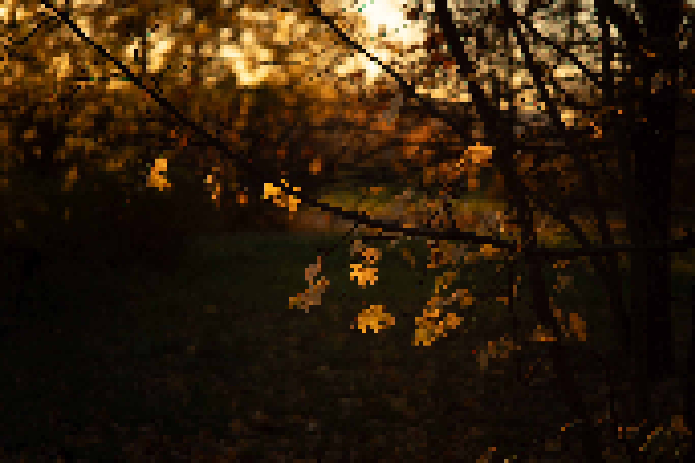
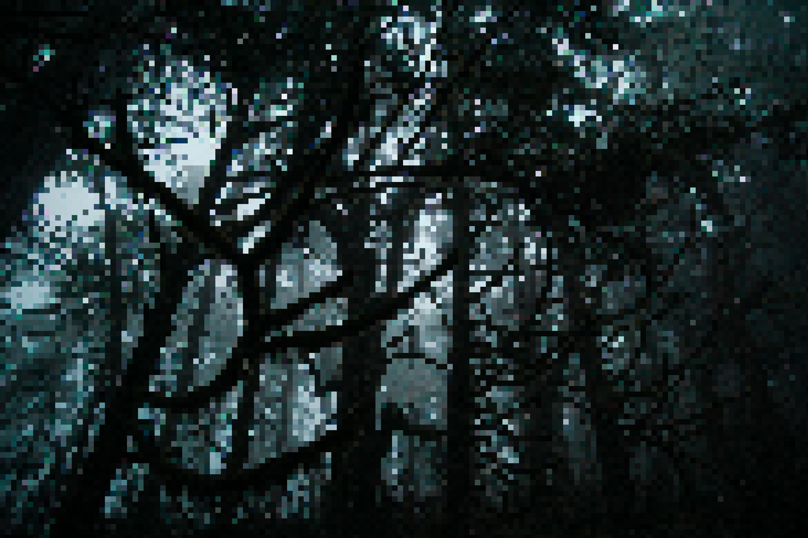
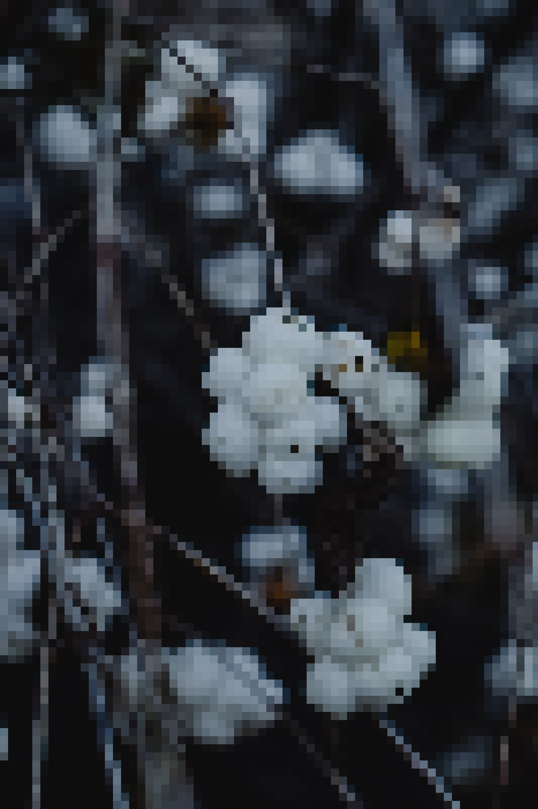

The Land
Searching on land it is! So you start going on an adventure. A very boring... plain adventure. How fun.
Every direction looks the same to you, so there's not really a point in going a specific way. So you start making your way and walk forwards to the endless path of trees and grass.
The leaves below your feet crackle and crunch, a truly satisfying sound, indeed. You turn your head to the right. Then the left. Then back forwards. You continue searching onwards.
The birds chirp, the wind blows, you hear waves crashing somewhere, but can't quite put your finger on it. Your hunger is getting stronger, but you can handle it. The day is beautiful and long, after all.

...
No. No, you absolutely CANNOT handle the hunger. It is getting unbearable. Your stomach's practically begging for food, it's growling left and right. FIVE HOURS. Still not a single edible thing in sight.
You start laughing at how you thought there might be a bear in this place. Yea, right. All the bears in this place have got to have gone extinct by now.
Where in the world were you to not even see a SINGLE piece of food, ANYWHERE?
...
Yea. No. Another 2 hours have passed, and yet the only thing you found was your hope of surviving fading away. This jungle is absolutely cursed. Actually, maybe you're the cursed one. You've been walking for hours, without end, with no food or--
Wait a minute..
You need....water....to live.....
WATER!!!

The thought had completely escaped your mind. Where the hell were you gonna get water from?!Not only is there no food in this seemingly infinite jungle, but the sounds of the waves you heard earlier were totally gone now! AND the sun is setting as well!
Will you even make it through the night? Should you just call it quits and sleep?
..No. You can't. If you quit tonight, tomorrow will only be harder.
...
Sigh.
The sun has compeltely set by now. The crickets are out, and your legs feel like they're about to fall off. As you look for a rock to sit down on, the gods bless you.
Berries! Strange, white berries...But you don't have time to be picky. It's this or starve.

You look at the large green bush that it's hanging from.
It's not poisoned, is it?
You reach out your hand to pick them off the bush. They smell weird too...
You hesitate before putting it in your mouth...
You bring it closer.. and closer.. and closer..